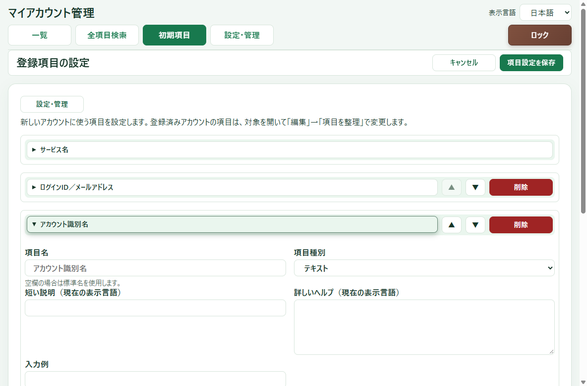
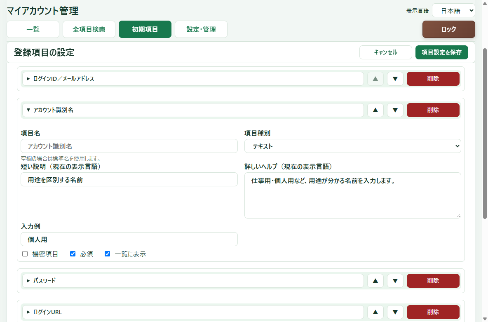
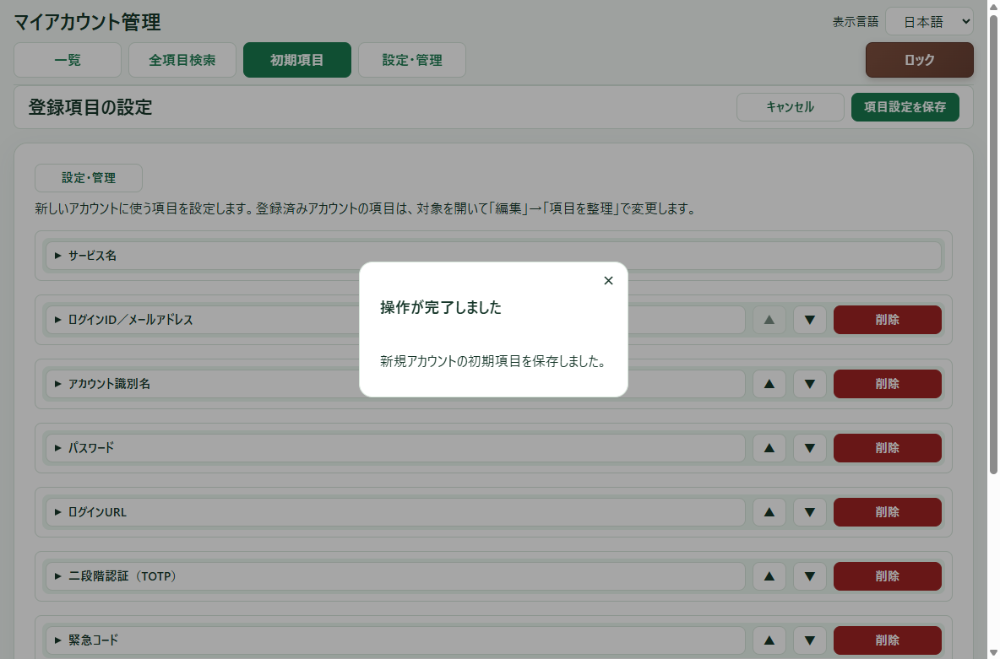
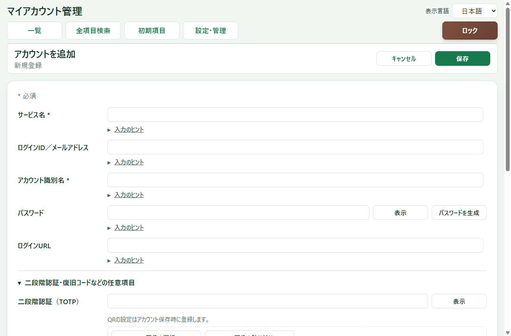
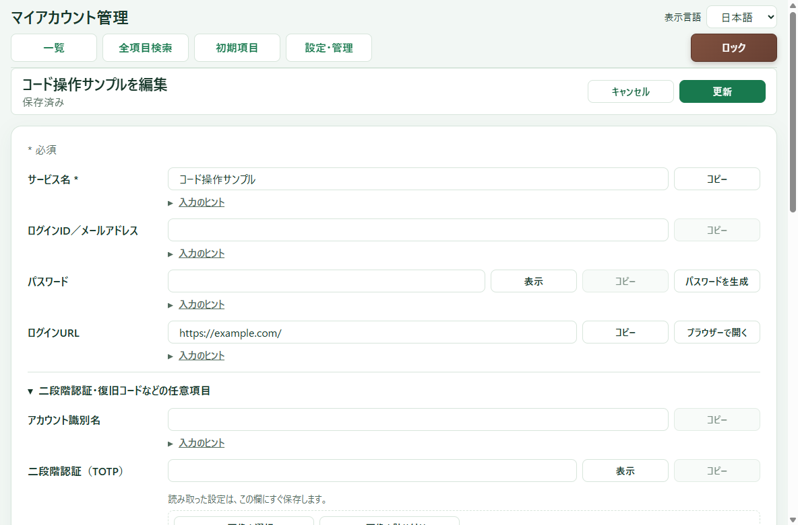

22新規登録用の初期項目
初期項目は、これから追加するアカウントの入力欄を決めます。
1［初期項目］で対象を開く
例では［アカウント識別名］を押します。

2必要な属性を設定する
下へ進み、例では［必須］をオンにします。

3［項目設定を保存］を押す
新規アカウントの初期項目を保存したメッセージを確認します。

4新規追加で反映を確認する
一覧へ戻り、アカウントの追加を開きます。

5登録済みの項目とは区別する
登録済みアカウントの編集画面には、従来の項目設定が残ります。
